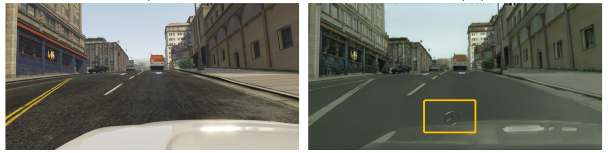
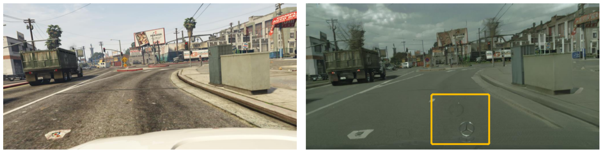

We propose a novel Classroom-style Transfer Generative Adversarial Network(CTGAN) to reduce the domain gap by transferring synthetic images to realistic classroom style.
We adapt the technique of CycleGAN and add two constraints: semantic shift regularization and artifact removal.
CycleGAN.
There is no constraint in the original cyclegan on the color distribution of the generated image and the original image. It can be seen that the color of a person's clothes or even skin may change dramatically in the transformed image.
Semantic shift regularization.
To address this problem, we use the inside-domain identity constraint as an aid to image translation, forcing the network to learn the identity mapping when samples from the target domain are provided as input to the generator.After adding this constraint, the transferred images can basically inherit the original color distribution.
Artifact removal.
As shown in the image above, the transferred images have noisy textures, which are often referred to as artifacts.
GAN-based image-to-image translation models often introduce artifacts when there is a large scene layout distribution gap between source and target datasets. For example, this paper have shown that
when transforming images from GTA to Cityscapes, GANs commonly introduce objects such as car logos at the bottom:

In our case, the textures in the transferred images may be derived from the table and chair arrangements in the images of the real dataset. To eliminate these artifacts, we used the stencil modality as a mask to ensure that the background remains as unchanged as possible from the original image without destroying the domain adaptation.
We note that the images after CTGAN tend to change the floor to red, which may be due to the bias in our real dataset:
Below are more visualizations about comparison of different constraints for translating synthetic images to real-classroom domain.
- All
- Origin
- CycleGAN
- + id Loss
- +id loss + mask loss(CTGAN)